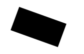
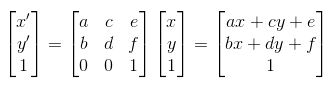

getContext: function()getTextWidth: function(text)getWidth: function()getHeight: function()strokeStyle: function(s)属性，设置或者返回用于笔触的颜色、渐变或模式。
context.strokeStyle=color|gradient|pattern; color:
var c=document.getElementById("myCanvas");
var ctx=c.getContext("2d");
ctx.strokeStyle="#0000ff";
ctx.strokeRect(20,20,150,100); gradient:
var c=document.getElementById("myCanvas");
var ctx=c.getContext("2d");
var gradient=ctx.createLinearGradient(0,0,170,0);
gradient.addColorStop("0","magenta");
gradient.addColorStop("0.5","blue");
gradient.addColorStop("1.0","red");
// 用渐变进行填充
ctx.strokeStyle=gradient;
ctx.lineWidth=5;
ctx.strokeRect(20,20,150,100); fillStyle: function(s)设置或返回用于填充绘画的颜色、渐变或模式。
context.fillStyle = color | gradient | pattern; color：css颜色值，默认#000000gradient: 渐变对象（linear or radial）pattern: pattern对象
lineCap: function(lc)lineJoin: function(lj)lineWidth: function(lw)rect: function(x, y, width, height)fillRect: function(x, y, width, height)strokeRect: function(x, y, width, height)clearRect: function(x, y, width, height)fill: function()stroke: function()beginPath: function()closePath: function()moveTo: function(x, y)lineTo: function(x, y)clip: function()arc: function(x, y, r, sAngle, eAngle, counterclickwise)圆弧绘制

- Center: arc(
100, 75, 50, 0*Math.PI, 1.5*Math.PI) - Radius: arc(100, 75,
50, 0*Math.PI, 1.5*Math.PI) - Start angle: arc(100, 75, 50,
0*Math.PI, 1.5*Math.PI) - End angle: arc(100, 75, 50, 0*Math.PI,
1.5*Math.PI)
quadraticCurveTo: function(cpx, cpy, x, y)1个控制点

- Start point: moveTo(
20, 20) - Control point: quadraticCurveTo(
20, 100, 200, 20) - End point: quadraticCurveTo(20, 100,
200, 20)
bezierCurveTo: function(cp1x, cp1y, cp2x, cp2y, x, y)2个控制点

- Start point: moveTo(
20, 20) - Control point 1: bezierCurveTo(
20, 100, 200, 100, 200, 20) - Control point 2: bezierCurveTo(20, 100,
200, 100, 200, 20) - End point: bezierCurveTo(20, 100, 200, 100,
200, 20)
arcTo: function(x1, y1, x2, y2, r)两条切线间绘制圆弧：
The arcTo() method creates an arc/curve between two tangents(切线) on the canvas.
以(200, 100)为控制点，
从(100, 100)
到(200, 200)绘制一条圆弧，半径分别为100，50， 150，
如下图所示：
- 目标点刚好为切点

- 半径太小，圆弧不过目标点

- 半径太大，圆弧不过目标点

isPointInPath: function(x, y)如果指定点位于当前路径中，返回true，否则false：
var c=document.getElementById("myCanvas");
var ctx=c.getContext("2d");
ctx.rect(20,20,150,100);
if (ctx.isPointInPath(20,50)){
ctx.stroke();
} scale: function(scaleWidth, scaleHeight)
例子：绘制一个矩形；放大到 200%，再次绘制矩形；放大到 200%，
然后再次绘制矩形；放大到 200%，再次绘制矩形：
var c=document.getElementById("myCanvas");
var ctx=c.getContext("2d");
ctx.strokeRect(5,5,25,15);
ctx.scale(2,2);
ctx.strokeRect(5,5,25,15);
ctx.scale(2,2);
ctx.strokeRect(5,5,25,15);
ctx.scale(2,2);
ctx.strokeRect(5,5,25,15); rotate: function(angle)
旋转坐标系，比如旋转20度：
var c=document.getElementById("myCanvas");
var ctx=c.getContext("2d");
ctx.rotate(20*Math.PI/180);
ctx.fillRect(50,20,100,50); translate: function(tx, ty)平移
transform: function(a, b, c, d, e, f)
变换矩阵会叠加，不同于setTransform的重置
参考： http://sumsung753.blog.163.com/blog/static/146364501201281311522752/
http://shawphy.com/2011/01/transformation-matrix-in-front-end.html
平移：
matrix(1, 0, 0, 1, tx, ty)
x' = 1x + 0y + tx = x + tx
y' = 0x + 1y + ty = x + ty 等价于：
translate(tx, ty) 缩放：
matrix(sx, 0, 0, sy, 0, 0)
x' = sx * x + 0 * y + 0 = sx * x
y' = 0 * x + sy * y + 0 = sy * y 等价于：
scale(sx, sy) 旋转：
matrix(cosθ, sinθ, -sinθ, cosθ, 0, 0)
x' = x * cosθ - y * sinθ + 0 = x * cosθ - y * sinθ
y' = x * sinθ + y * cosθ + 0 = x * sinθ + y * cosθ 等价于：
rotate(θ) 切变：
matrix(1, tan(θy), tan(θx), 1, 0, 0)
x' = x + y * tan(θx)
y' = x * tan(θy) + y θx和θy分别代表往x轴正方向和往y轴正方向倾斜的角度，两者是相互独立的。
比如：
matrix(1, 0, tan(45deg), 1, 0, 0)
x' = x + y * tan(45deg)
y' = y 表示向x轴倾斜45度。
镜像反射：todo
setTransform: function(a, b, c, d, e, f)重置并重新创建新的变换矩阵
font: function(cssFont)CSS Font:
font-style font-variant font-weight font-size/line-height font-family 举例：
italic small-caps bold 12px arial,sans-serif
normal normal normal 关于font-variant：
设置小型大写字母的字体显示文本，所有小写字母会被转换为答谢，但是相比其余字幕，尺寸更小。
normal | small-caps | inherit 关于font-style：
normal | italic | oblique | inherit 关于font-weight：
normal | bold | bolder | lighter | inherit | 100 - 900
400 = normal
700 = bold textAlign: function(align)textBaseline: function(align)fillText: function(text, x, y, maxWidth)strokeText: function(text, x, y, maxWidth)globalAlpha: function(alpha)globalCompositeOperation: function(gco)save: function()restore: function()width: function(w)height: function(h)css: function()